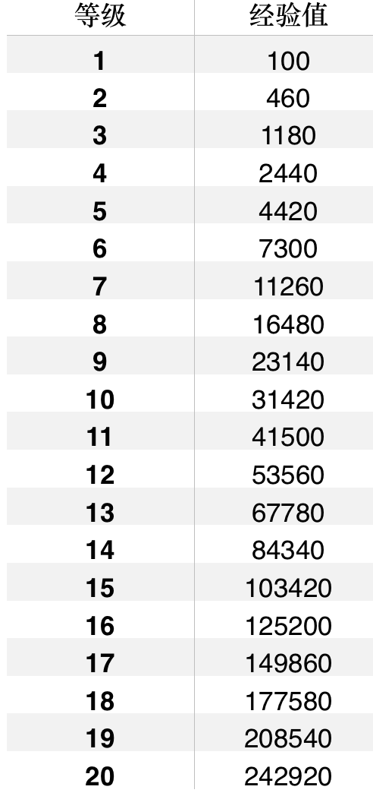

所得款项一部分用于慈善事业，另一部分将作为活动\奖励资金以现金或实物奖品形式回馈给用户。在后期功能中，在用户完成系统给予的学习要求（如连续15天使用时间泡3小时+）后，通过时间币反向提取功能，用户可以将已经支付的金额重新提取回支付宝。
一、积分
积分获得：
（1）首次登陆并完成教程送100积分。
（2）1.0版本每完成半小时的学习（使用锁定功能），积分增加10。
2.积分失去：
（1）很恶劣的恶意解锁行为，如在学习进程中检测到后台关闭或强制卸载时间泡以获得解锁等，用户积分减200。
（2）必须扣除一定积分而账户内积分不足时，将积分扣减至零。
3.每天累计完成学习8h后，积分不再增加。
4.连续超过3h的学习不增加积分。
二、经验值
经验值获得：
（1）签到。第一天签到获得20经验值，连续签到第二天获得25经验值……第五天获得40经验值，连续签到第六天及以后获得50经验值。
（2）每完成1分钟的学习，经验值增加1。
经验值失去：很恶劣的恶意解锁行为，如在学习进程中检测到后台关闭或强制卸载时间泡以获得解锁等，用户经验值清0.
每天累计完成学习8h后，经验值不再增加。
连续超过3h的学习不增加经验值。
经验值与等级：

（即LV1显示：？/100,LV10：?/31420，LV1升级到LV2需要360经验值）
一．积分
积分获得：
（1）2.0版加入一键锁定、积分赠送及分享成果功能。不同类型锁定获得积分不同: 一键锁定所有APP，每半小时获得15积分；锁定部分APP则每小时仍获得10积分。另外，帐号间积分可互相赠送，若将学习成果分享到社交平台，则可获得5积分。
（2）3.0版中加入系统任务后， 每完成一个普通任务可获得50-100不等的悬赏积分，难度较高的长线任务（如连续签到15天）可获得100-500积分。
（3）4.0版加入学习资料后，主动上传学习笔记等并审核通过可以获得积分。如上传一份合乎规定的考卷可获得100积分。
（4）3.0版中加入系统任务后（如连续15天签到）， 每完成一个可以增加100-500不等。
（5）5.0版加入答疑区，用户提问一次可获得15积分，回答者若被采纳为最佳答案获得积分50。
2.积分失去
（1）2.0版加入好友功能后，可作为一种惩罚，学习失败积分转到监督好友账户中。
（2）4.0版加入学习资料板块后，用以兑换一些精品资料比如视频和电子书，具体积分数额视资料而定。
（3）4.0版加入商城板块后，在积分商城中，兑换一些商家代金劵（如滴滴打车劵）或抽取一些实物奖励（如iphone6）。
（4）购买一些虚拟装备如学霸勋章，勋章种类不同价格不同。
时间币
时间币获得：
（1）用户每次放弃任务后，现金自动转化成等额时间币（如用户设定5元为解锁金，放弃任务会使5元从其支付宝流出，转化为5时间币。
（2）每升一级可以抽一次“时间币”红包，抽中则其时间币增加。（3）4.0版加入更多功能后，设置直接充值功能，以获得时间币。
时间币失去：
（1）3.0版中加入系统任务后（如连续15天使用时间泡超过3小时）， 用户可以通过完成规定任务将时间币反向提取成为现金进入其支付宝。
（2）3.0版加入好友功能后，可作为一种惩罚，学习失败时间币转到监督好友账户中。
（3）4.0版本后用以购买会员等高级功能（也可以用支付宝直接购买）
稳定运行说明（后台运行和操作系统说明，需要完善）
意见反馈